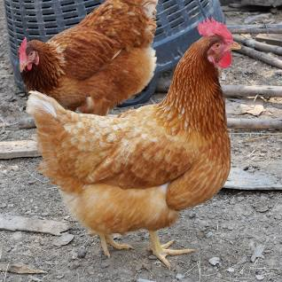
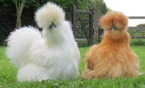
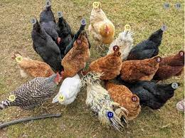
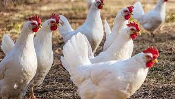
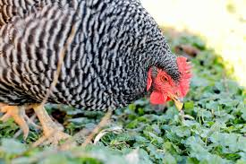

Keeping backyard chickens is a wonderful hobby! Chickens are affectionate, humorous and curious animals. They typically live outside, and are relatively low maintenance. They even provide a steady supply of fresh eggs! Kids love having chickens around, and learn about life, biology and responsibility in caring for them. Chickens also do their part to help manage some backyard pests, like slugs (hello gardeners!), and can devour some leftover kitchen scraps in seconds. Of course, they do require a little work and care to make sure they live happy and healthy lives.
Chickens need a clean coop where they can sleep, lay eggs, and have protection from the elements. A run is an enclosure where they can safely explore a patch of ground. The love to range around the yard all day long when we’re home! Building a coop yourself is a great project. Be sure to make it easy to access for cleaning and egg collection! Pre-fabricated coops are easy to find online, and get you started quickly and easily. Check out some of the options from UK based Omlet.
Having a flock of hens is a popular hobby, so breeders and suppliers are easy to find in most urban centres. Connect with a local Farmer's Co-op, or homesteading group on your favorite social media platform for local help in getting started.
We keep 3 chickens in our back yard. This is our first time raising chickens, and it has been a wonderful experience so far! Normally, they lay an egg each every day, although one of them likes to hide her eggs around the yard every now and then.
| Picture | Breed | Characteristics |
|---|---|---|
|  | ISA Brown | A copyrighted brand name developed in France for optimum egg production. |
|  | Silkie | A chicken with a really unique look. |
|  | Barnyard Mix | The mutts of the chicken world. They're easy to find. It's what we keep at our house. |
|  | Leghorn | The classic egg layer. Lays big, white eggs. They can be more tempermental than other breeds. |
|  | Barred Plymouth Rock | A friendly and intelligent breed, excellent with kids. |
“I dream of a better tomorrow. One where chickens can cross the road and their motives remain unquestioned.” ― Anonymous